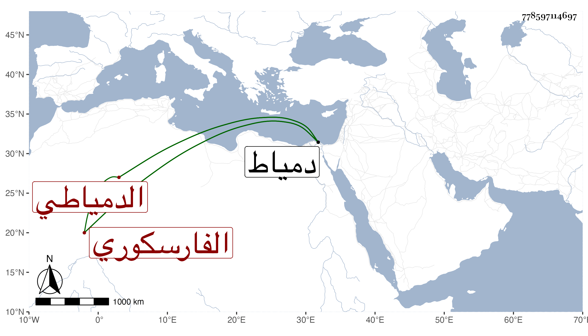

0902Sakhawi.DawLamic.ITO20230111-ara1.EIS1600.778597114697
Biography ID: 778597114697
36
محمد بن محمد بن محمد معين الدين الفارسكوري الأصل الدمياطي المولد والدار ويعرف بلقبه . أحد المتمولين من بيت تجارة ووجاهة حتى كان أبوه على قاعدة تجار دمياط ينوب فيها عن قضاتها ونشأ هذا فقيرا جدا فقرأ القرآن أو بعضه وتعانى استئجار الغيطان ونحوها وترقى حتى زادت أمواله على الوصف بحيث أنه قيل وجد ببعض المعاصر خبيئة . وصار ضخما عظيم الشوكة مبجلا زائد الاعتبار عند الجمال ناظر الخاص حتى أنه روفع فيه عند الظاهر جقمق فما تمكن منه من فعل غرضه بل ضرب المرافع وابتنى بدمياط مدرسة هائلة وعمل بها شيخا وصوفية ، وأكثر الحج والمجاورة وكان يقال أنه لقصد سبك الفضة هناك وبيعها على الهنود ونحوهم حتى لا يطلع عليه وبلغني أنه كان في صغره متهتكا فابتلاه الله بالبرص ولا زال يتزايد حتى امتلأ بدنه وصار لونه الأصلي لا يعرف ، ومات وهو كذلك قريبا من سنة ستين عن سن عالية واستمرت المظالم منتشرة هناك بسبب أوقافه وهلك بسببها غير واحد ، وهو مولى جوهر المعيني الماضي عفا الله عنه وإيانا .
